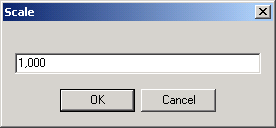

Use the first button to zoom in twice the current scale, the second to zoom out twice the current scale and the third to set the exact scale value:

This option is also available from the main menu: go to Draft > Scale.
|
Scale
|
Previous Top Next |